Python Mongodb Esp8266 小程序 TCP简易项目
好久不见，今天继续来分享有意思的小项目！
在观看本教程前，您最好具备的知识和必备的软硬件：
- Python
- JavaScript
- Arduino IDE
- TCP通讯基础
- 微信开发者工具
- MongoDB
- ngrok
- Esp8266开发板
- 温湿度传感器(我使用的是DHT11)
没关系，如果有不会的知识，现学现用就好。学以致用是我认为学习知识最快速，最方便的途径，有了确切的目标，在学习时会有方向性，不容易学着学着学飞了。
这次的项目所要求的掌握的知识较多，我这里就分享一下我在实现这个项目时大概的走向，所以代码或配置有些许细节遗漏还请多多谅解，可以到网络上寻求相关教程进行补全。
MongoDB数据库下载
首先找到MongoDB的官网下载，切记选择社区版，文件格式我们改为zip格式下载
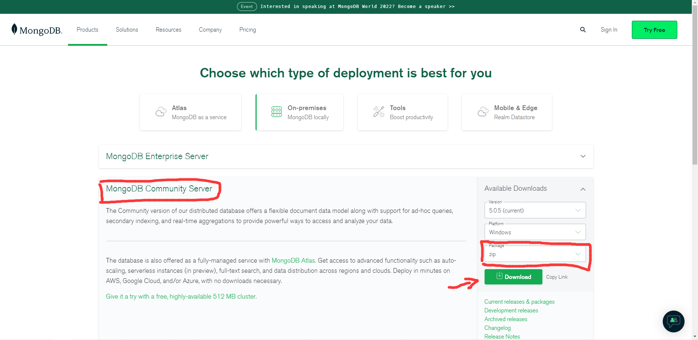好，下载完之后请自行去百度搜索相关的资料，MongoDB中文网网上也能找到,主要是这一块配置的细节我忘记了，就不教学了:p
值得一提的是，这里呢还需要下载MongoDB Shell，同样是在官网可以下载到
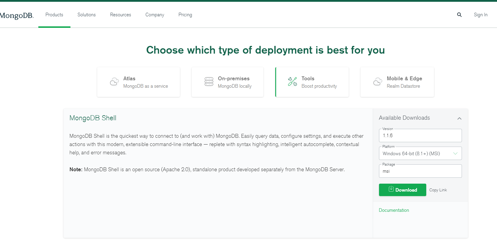Python Tcp Server的配置
需要用到的模块:
- sys
- threading
- json
- socket
- pymongo
模块的安装网上都有教程，我使用的是Pycharm作为IDE进行编程，同时我们需要使用MongoDB Shell进行辅助，这个是Shell命令的介绍，有不懂的可以自行查询。
先连接mongodb数据库，默认命令是
mongodb://localhost/
我们照着输入回车即可，这是成功后的画面
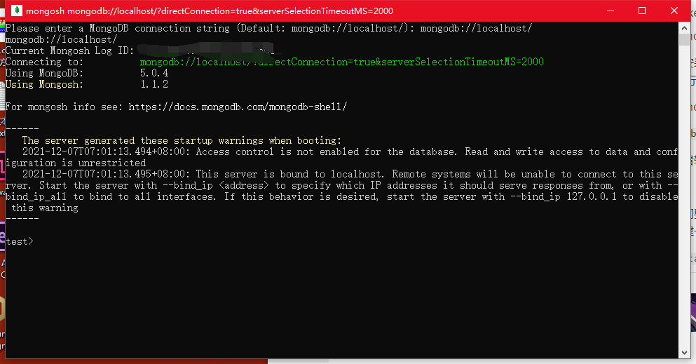然后我们要在Shell 新建一个自己用的数据库，使用指令 “use”来创建数据库，如果该数据库不存在，则会创建一个新的数据库，如果该数据库已经存在，则将切换到该数据库
use database_name
数据库的名字自己可以自定义，这是我创建好了的数据库，可以使用命令
show dbs
来查询所有的数据库
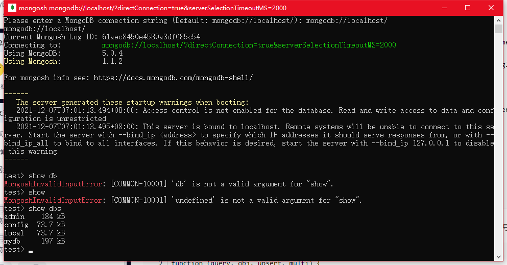我们在自己新建好的数据库下面新建一个集合，命令是
db.createCollection("mycollection")
这里同样也可以使用 show collections 查询数据库所有的集合，我新建了一个名为“gamelib”的集合
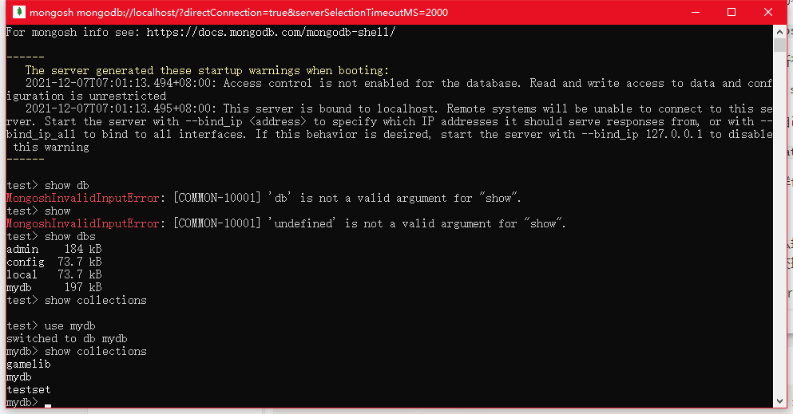好，那么接下来我们就要在Python中操作MongoDB数据库，并且还要创建一个TCP服务器，用于与传感器交换数据。这是Pymongo的使用说明，可以查阅相关方法
在Pycharm中新建一个py文件，随便写一些代码测试Python与MongoDB是否正常运行
import pymongo
#mongodb 操作#
client = pymongo.MongoClient("localhost", 27017)#mongodb的数据库默认是在本地 27017端口
db = client.mydb#选择数据库
collection = db.gamelib#选择集合
student = {
'id': '20170101',
'name': 'Jordan',
'age': 20,
'gender': 'male'
}#新建一个字典对象
collection.insert_one(student)#添加这个对象到集合里
for show_value in collection.find():#遍历集合中的所有数据
print(show_value)
运行后的结果，可以看到返回元素中已经添加了student这个对象(另外两个是之前做好的，请无视)
那么我们在运行一次会怎么样呢？
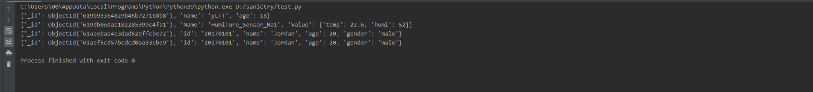哦，我的老天，竟然出现了两个完全一样的数据！但是细细一看，又发现还是有不同的地方，就是前面的”ObjectId”属性中的值是不同的，这是因为我们使用了Pymongo的insert_one()方法添加了一个值为 “student”的元素，所以每一次运行，都会添加一个新的元素进去。对应的更新方法 update_one()和delete_one()方法就不在演示，请自行查阅资料。
同样，我们去Shell里面也能find到相同的数据
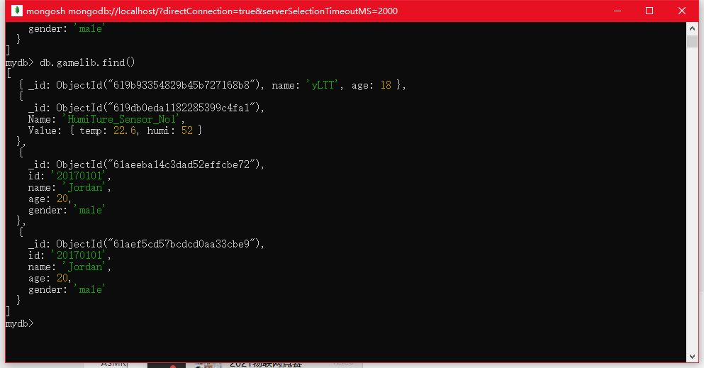为了统一数据的标识，我们新建一个自己的数据格式，方便之后Esp8266连接服务器的时候发送json数据可以直接拿来update
{
Name: 'HumiTure_Sensor_No1',
Value: {
temp: 22.6,
humi: 52
}
}
value里面的值就是后面Esp8266收集并上传到服务器的，这里先放一个模板
这样我们就可以开始写函数了，首先更新函数的逻辑，我采用的是update_one这个函数
old_data = collection.find_one({"Name": "HumiTure_Sensor_No1"})
new_data = {"Name": "HumiTure_Sensor_No1", "Value": value}
set_data = {"$set": new_data}
collection.update_one(old_data, set_data)
首先我们要将要更新的数据和更新后的数据准备好，值得注意的是要将更新后的数据放置在’’$set”操作符后,然后再将他们传入update_one()函数之中
TCP socket通讯，我相信大部分人都有了解过，这里我们带过他的底层理论，直接使用python进行一个操作的演示即可
ipaddress = ("", 8080)
tcp_server = socket.socket(socket.AF_INET, socket.SOCK_STREAM)
tcp_server.bind(ipaddress)
tcp_server.listen(128)
conn, addr = tcp_server.accept()
request = conn.recv(128)
print('request is:', request.decode('UTF-8'))
print('Connected by:', addr)
reply = 'OKKK'
conn.sendall(reply.encode('UTF-8'))
conn.close()
我们逐行进行讲解，因为直接打在注释里面我感觉会显得我很敷衍啊有木有。来看第一行，这里没啥好说的将本地的8080端口设为我们的ip。第二行就比较重量级，这里我们通过socket.socket()创建一个socket对象 “tcp_server” 并使用 IPv4(AF_INET, IP version 4)和TCP通讯协议 (SOCK_STREAM)
第三行也很直观，我们将这个socket对象设置我们的ip地址上(也就是本地的8080端口)
第四行就是开始TCP监听，里面的参数是完成backlog的长度，这边设置没什么特别需求学我设置128就好了。第五行又是重量级，socket.accept()开始被动的等待TCP客户端的连接，因为是阻塞式的所以如果没有客服端连接它会一直卡在这一行，如果一但有接到TCP客户端的连接，该方法将会返回一个新的socket连接以及接入连接客户端的ip地址。
第六行就好理解了，socket.recv()方法会返回客户端发送的信息，里面的参数就是buffersize，一般的来说也设个128就差不多，看你自己实际情况去修改就好了。
第七行就是将客户端发送过来的消息转码后显示到Console上，因为返回的数据是字节类型的。
第八行，显示客户端的ip地址。
第九行，socket.sendall()方法，本地服务器给客户端发送消息，切记里面的参数要字节类型，这里我们转码一下即可。
第十行，关闭和客户端的连接。
好，那我们现在开整
import sys
import json
import socket
import threading
import pymongo
#mongodb 操作#
client = pymongo.MongoClient("localhost", 27017)
db = client.mydb
collection = db.gamelib
# 指定服务器IP地址 #
ipaddress = ("", 8080)
class MyServerSocket:
def __init__(self, ipadd, time):
self.server_socket = socket.socket(socket.AF_INET, socket.SOCK_STREAM)
self.server_socket.bind(ipadd)
self.server_socket.listen(time) # 128 #
def change_humiture_data(self, value):#将客户端的Json数据解码成合适的类型，然后再交给数据库，这里是数据更新给MongoDB的部分呢
old_data = collection.find_one({"Name": "HumiTure_Sensor_No1"})
new_data = {"Name": "HumiTure_Sensor_No1", "Value": value}
set_data = {"$set": new_data}
collection.update_one(old_data, set_data)
print(collection.find_one({"Name": "HumiTure_Sensor_No1"}))
def get_set_value(self, data): #将客户端的Json数据解码成合适的类型，然后再交给数据库，这里是解码的部分呢
json_str = data.decode("UTF-8")
set_json = json.loads(json_str)
self.change_humiture_data(set_json)
print(type(collection.find_one({"Name": "HumiTure_Sensor_No1"})))
def run(self):
while True:
client_socket, client_addr = self.server_socket.accept() # 等待客户端连接
print("{} online".format(client_addr))
tr = threading.Thread(target=self.up_data_new, args=(client_socket, client_addr)) # 创建线程为客户端服务
tr.start() # 开启线程
self.server_socket.close()
def up_data_new(self, client_socket, client_addr):
while True:
recv_data = client_socket.recv(24)#处理得到的数据
really_data = recv_data.decode('UTF-8')
if recv_data:
#smg.get_set_value(recv_data)
#really_data = recv_data
if really_data =='wxOnline':#判断是否为小程序，如果是则发送数据
data2Wx = collection.find_one({"Name": "HumiTure_Sensor_No1"})['Value']
send_data=json.dumps(data2Wx)
print(data2Wx)
client_socket.sendall(send_data.encode('UTF-8'))
else :#如果不是小程序，就将读取回来的数据进行更新
try:
smg.get_set_value(recv_data)
except Exception as e:
print(e)
else: # 客户端断开连接
print("{} offline".format(client_addr))
break
client_socket.close()
smg = MyServerSocket(ipaddress, 128)
if __name__ == "__main__":
try:
smg.run()
except KeyboardInterrupt:
print("end")
sys.exit(0)
整完了。因为这个Tcp连接呢，一次只能跟一个客户端对接，啊，搞得我很麻木，只好用多线程的方式来实现一对多，只要检测到一个客户端连接就新开一个线程。
由于我们这个只是一个小项目，不用考虑大量连接时候的需求，后期我会研究一下nodejs来实现，应该会比用Python方便很多。
这里我仅提供一个例子，大家可以照着我的代码按照自己的需求去改。（什么，你问我看不懂怎么办，我顶！阿Sir，百度谷歌搜狗必应老师不是都在这吗，你去问他们啊！当然你也可以加我微信问我。付费提问哈）
Python服务器通过Ngrok映射到外网
噔噔蹬蹬！
终于到将本地服务器，映射到互联网中这一步了，只要完成这一步就意味着你的传感器即使隔着你的本地服务器十万八千里，只要传感器连接着互联网，就能将数据送达到服务器上
我们先要下载Ngrok软件，配置的相关内容我也不说，大家都给我去百度吧哈哈
下完ngrok，直接打开它，会弹出一个Console，我们按照它上面的提示输入
ngrok tcp 8080后回车
tcp协议 本地端口号8080，这些都挺熟就不解释了
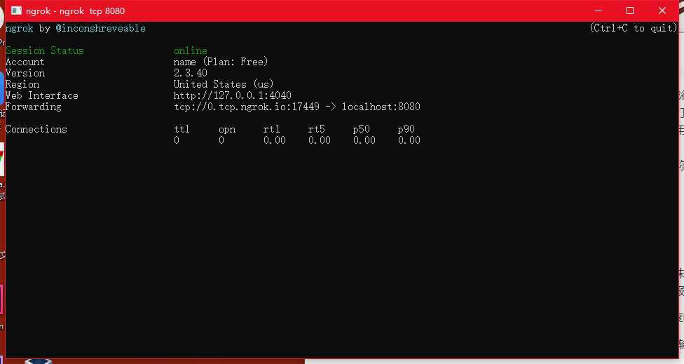成功后的界面，对我们来说有用的消息就是
tcp://0.tcp.ngrok.io:17449 -> localhost:8080
告诉我们”0.tcp.ngrok.io:17449”这个网址现在映射到了本地端口8080上，得到Python服务器的外网ip后面就好办了。
值得一提的是这个网址和端口号你每一次重启Ngrok都会变的，所以也只能用作小型的项目展示用了，一旦你重启了Ngrok，要重新设置一边全部的ip和端口。
烦死了，要不是我没钱，直接整一个稳定的域名用来传输服务器的数据哈哈，谁有钱就资助我吧
硬件配置
Esp8266与DHT11初次见面就直呼
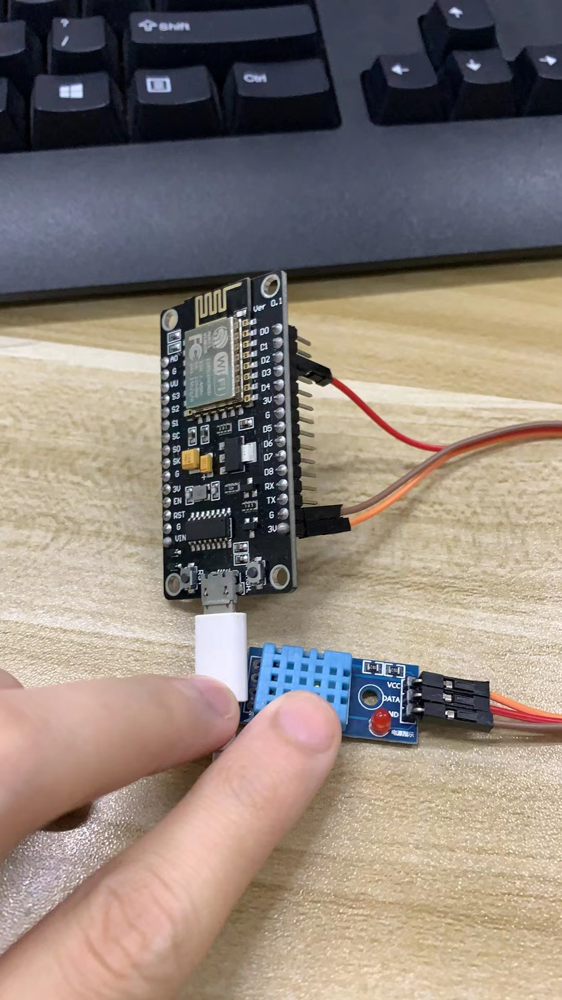简陋啊
简单接线完后，直接进入ArduinoIDE进行一个代码的写
#include <Arduino.h>
#include <ArduinoJson.h>
#include "PubSubClient.h"
#include <ESP8266WiFi.h>
#include "DHT.h"
#define WIFI_SSID "IOT_FIRE" //wifi名
#define WIFI_PASSWD "IOT666666" //wifi密码
#define DHTPIN D2
DHT dht(DHTPIN, DHT11);
const uint16_t port = 15877; //Tcp 服务器的端口
const char * host = "6.tcp.ngrok.io"; //Tcp 服务器的ip地址
WiFiClient espClient; //创建网络连接客户端
DynamicJsonDocument dht_data(2048);//开辟一片内存给json数据
//连接WIFI相关函数
void setupWifi()
{
WiFi.mode(WIFI_STA);
WiFi.begin(WIFI_SSID, WIFI_PASSWD);
while (WiFi.status() != WL_CONNECTED)
{
delay(1000);
Serial.println("WiFi not Connect");
}
dht.begin();
Serial.println("Connected to AP");
Serial.println("IP address: ");
Serial.println(WiFi.localIP());
}
void setup()
{
Serial.begin(115200);
setupWifi();
}
void loop()
{
String json_data;
float humi = dht.readHumidity();//读取DHT的数据
float temp = dht.readTemperature();
dht_data["temp"] = temp;//将DHT的数据存在Json中
dht_data["humi"] = humi;
serializeJson(dht_data, json_data);//json序列化
Serial.println("Connecting to TCP Server :");
Serial.println(host);
if (!espClient.connect(host, port)) {
Serial.println("Failed");
Serial.println("Reconnect in 5 seconds");
delay(5000);
return;
}
// 发送数据到 Tcp Server
espClient.print(json_data);
//读取从 Tcp Server 返回的数据（以回车符结尾）
String line = espClient.readStringUntil('\n');
Serial.println(line);
delay(1000);
}
这一段的代码写的比较简单，该注释的地方我也打上了，一个很简单的逻辑，直接将读回来的数据发送给Tcp Server。
由于这一段代码是我第二天写的，这个时候我的电脑已经重启过了，所以Ngrok的ip改变了
进行第一次通讯测试
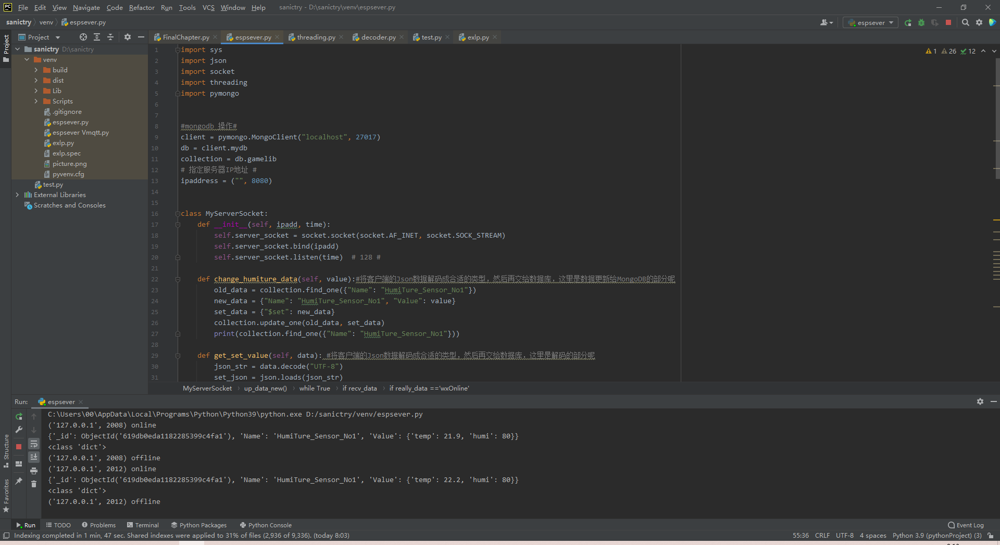打开服务器后，可以在Console中看到Esp8266连接成功，并且更新数据的信息。
这里我搞了点骚操作，让服务器没有收到数据就主动断开与客户端的连接，这样可以保证客户端连接一次，发送一次消息后直接断开，防止多个客户端相互堵塞。(什么？你说这样效率低？哈哈，自己改代码咯~反正我只是给个例子)
不管怎么说，第一次服务器与客户端通讯测试算是成功了，我们看看Shell里面的数据有没有同步
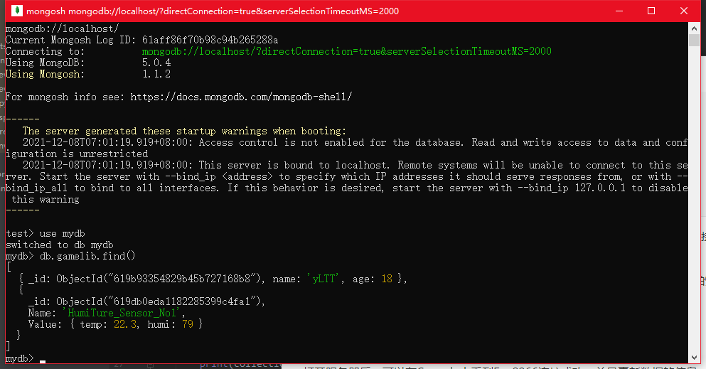ok，看来没问题了，接下来就进入到应用层的使用了！
微信小程序的开发
这一步，直接就有腾讯官方文档指导，前期步骤大家可以直接看下面的
哦吼，不会用是吧，不要着急，一开始我也不会用，跟着官方操作一下理清头绪就好了。
开始 | 微信开放文档 官方文档教程
等到你安装完软件，也注册好了账号，就可以开始后面的步骤
注意，我这里只提供连接Tcp服务器的方法，不会将整个工程的代码放出来（毕竟我自己写了好久还挺累的）
靠，我找遍全网都没能找到小程序Tcp socket的相关教学，折磨啊，幸好这玩意用起来也不难。我这里给个小例子抛砖引玉，大家照着改改就好了。
const tcp = wx.createTCPSocket();
function arrayBufferToJSON(buffer) {
return JSON.parse(String.fromCharCode.apply(null, new Uint8Array(buffer)))
}
Page({
/**
\* 页面的初始数据
*/
data: {
text1: '湿度',
text2: '温度',
num1: '60',
num2: '60',
socketOpen :false,
userInfo: {},
hasUserInfo: false,
user_image:"http://q1.qlogo.cn/g?b=qq&nk=309002093&s=640",
canIUseGetUserProfile: false,
humi_percentage: 75,
temp_percentage: 75
},
upDataNow:function(res){
var res_json = arrayBufferToJSON(res.message);
console.log(res_json);
this.setData({
num1:res_json['humi'],
num2:res_json['temp'],
humi_percentage:res_json['humi'],
temp_percentage:res_json['temp']
});
},
onLoad: function (options) {
tcp.onMessage(this.upDataNow);
tcp.onClose(this.try2Connect_again)
},
onConnect_reply: function(){
console.log('已连接,并且发了条消息');
tcp.write('wxOnline');
},
try2Connect_again: function(){
tcp.connect({address: '6.tcp.ngrok.io', port: 15877});
tcp.onConnect(this.onConnect_reply);
},
onReady: function () {
tcp.connect({address: '6.tcp.ngrok.io', port: 15877});
tcp.onConnect(this.onConnect_reply);
},
})
我们直接提取核心代码，并且细细分析
function arrayBufferToJSON(buffer) {
return JSON.parse(String.fromCharCode.apply(null, new Uint8Array(buffer)))
}
首先来看这个方法，将ArrayBuffer类型的数据转为Json数据。通过查阅官方文档可知道
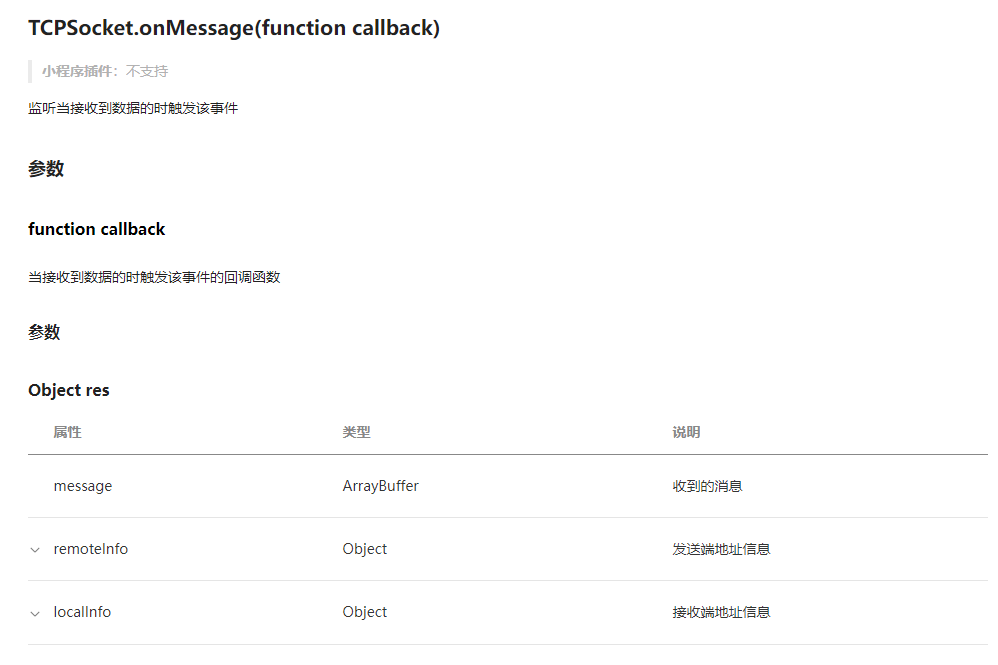socket.onMessage()这个方法返回的是ArrayBuffer的数据，所以我们这里使用js的String.fromCharCode()方法，因为数组无法传到这个方法内，我们只好使用apply来传递数据。
这里我套了个娃，直接把转好的字符串再次打包成Json数据，这样方便接下来的操作
const tcp = wx.createTCPSocket();
tcp.connect({address: '6.tcp.ngrok.io', port: 15877});
tcp.onConnect(this.onConnect_reply);
console.log('已连接,并且发了条消息');
tcp.write('wxOnline');
tcp.onMessage(this.upDataNow);
tcp.onClose(this.try2Connect_again)
这个是过程简化后的Tcp创建代码，可以看见我们先新建一个TcpSocket实例(‘tcp’)然后将它连接到我们ngrok映射出来的ip上
当客户端连接上后，将会触发回调函数onConnect_reply()，里面是在console中输出连接成功的消息同时小程序客户端给服务器发送一条为“wxOnline”的请求消息
之后等待服务器传递数据过来，收到数据后触发回调函数upDataNow,将读取到的Arraybuffer数据转为json数据后提取里面的温湿度数据更新到主页面上
最后是检测，当tcp socket连接断开后，重新连接并且发送请求消息
小程序连接服务器
启动小程序服务！
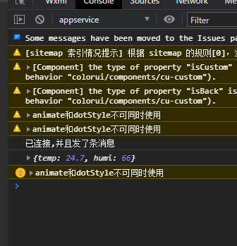 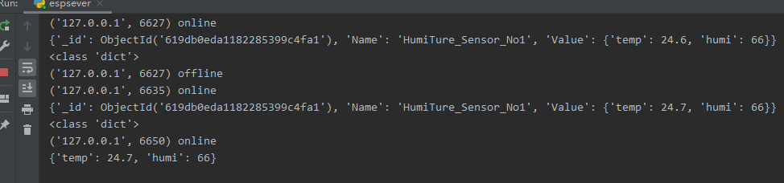芜湖！连接成功！
看看我自己的小程序页面
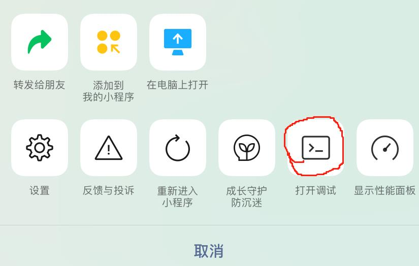这里注意要手动打开调试，才能连接到网络，要不然只能看到静态页面~
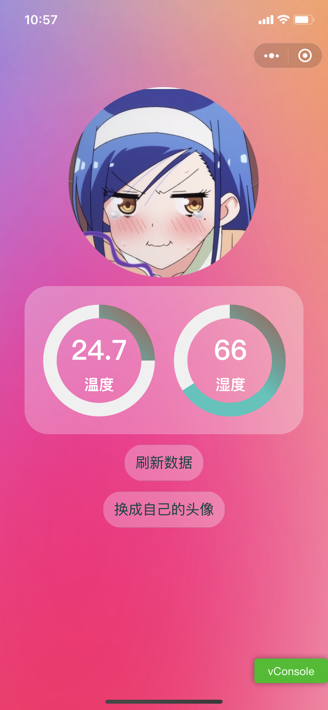好，终于完成了
总结
这个项目从立项到实现到发布教程总共是2个星期多3天，期间我是完全没有小程序的经验，所以这方面卡的我时间比较长，整体流程做下来还是比较通畅的，因为Python esp8266这一块我也玩的比较久了。
这个教程虽说是教程，但更多的是我自己的复盘，有很多细节我都没讲，这点真的挺惭愧的，我觉得我自己没能力讲的那么的细致，去网上看更细节的教程会更好。
这个项目还算是比较容易实现的了，因为很多代码我都写的比较基础，只能够用来做做个人产品玩玩，商业化肯定会出很多BUG，这方面我也在努力学习，希望有朝一日也能够开发出商业级的物联网系统教程。
那么2022年也快到了，这里预祝大家新的一年，新的起点。年年更上一层楼吧！